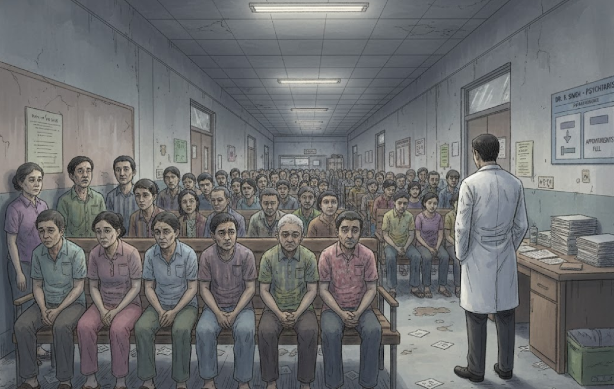
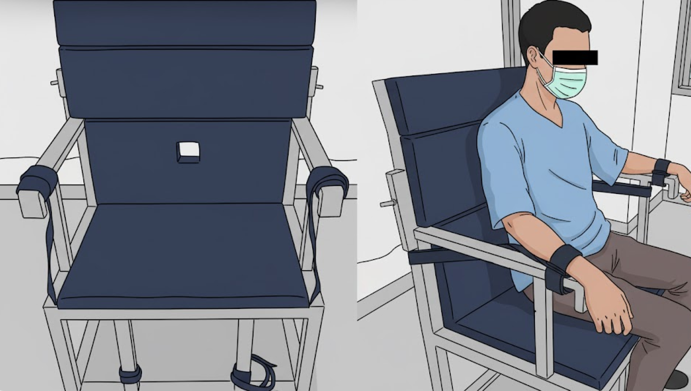

ประเทศไทยมีจิตแพทย์ประมาณ 850 คน (ปี 2566) คิดเป็น 1.3 คน ต่อประชากร 100,000 คน ซึ่งต่ำกว่าค่าเฉลี่ยที่องค์การอนามัยโลก (WHO) แนะนำอย่างมาก (WHO แนะนำ 3 หรือ 10 คนต่อ 100,000 คน)

คว้า รางวัลบริการภาครัฐ! ช่วยผู้ป่วยก้าวร้าวอย่างปลอดภัย

คลิกที่ไอคอนเพื่อดูราคาและรายละเอียดค่าใช้จ่าย
| พบแพทย์ทั่วไป | ฟรี (ตามสิทธิ์ เช่นบัตรทอง 30 บาท) | ขึ้นกับสิทธิ์ |
| ค่าเจาะเลือด | ฟรี / คิดเล็กน้อย | ขึ้นกับหน่วยบริการ |
| ค่าตรวจเฉพาะทาง | 80 – 150 บาท | ต้องมีการส่งตัว |
| ค่าตรวจพิเศษ (เอกซเรย์ / อัลตราซาวด์) | 300 – 500 บาท | ราคากลางมาตรฐาน |
| ค่ายา | ฟรี / ราคายาไม่สูง | ยาตามบัญชียาหลัก |
| พบแพทย์ทั่วไป | 500 – 1500 บาท | ไม่รวมค่ายา |
| ตรวจเลือดพื้นฐาน | 500 – 2,000 บาท | แล้วแต่รายการตรวจ |
| ตรวจพิเศษ (เอกซเรย์) | 1,000 – 3,000 บาท | แล้วแต่โรงพยาบาล |
| ห้องพิเศษ | 1,000 – 2,000 บาท/คืน | ไม่รวมบริการอื่น ๆ |
| พบแพทย์ทั่วไป | 1,500 – 3,000 บาท | แพทย์เฉพาะทางแพงกว่า |
| ตรวจเลือดพื้นฐาน | 1,000 – 3,000 บาท | สูงกว่ารัฐ 3–5 เท่า |
| ตรวจพิเศษ (CT/MRI) | 5,000 – 15,000 บาท | ขึ้นกับเครื่องแพทย์ |
| ค่าวัคซีน | 2,000 – 6,000 บาท | วัคซีนพรีเมียม |
| ห้องผู้ป่วยใน | 2,500 – 6,000 บาท/คืน | ห้องเดี่ยวแพงขึ้น |
| ห้องพิเศษ | 10,000 – 15,000 บาท/คืน | โรงพยาบาลใหญ่ราคาเพิ่มขึ้น |
หลัก 3 อ. คือ: อาหาร ออกกำลังกาย และอารมณ์
หลักโภชนาการ: เน้นอาหารหลากหลาย (ผัก 2 ส่วน, ข้าว-แป้ง 1 ส่วน, เนื้อสัตว์ 1 ส่วน)
การจัดการอารมณ์ด้วยหลัก 3 ส. (สะกด สกัด สะกิด)
เครื่องมือวัดความสุข: ดัชนีชี้วัดความสุขคนไทย (THI)" ฉบับสั้น 15 ข้อ สำหรับสำรวจและประเมินความสุข
ในช่วง 1 เดือนที่ผ่านมา ท่านมีความรู้สึกอย่างไรบ้าง